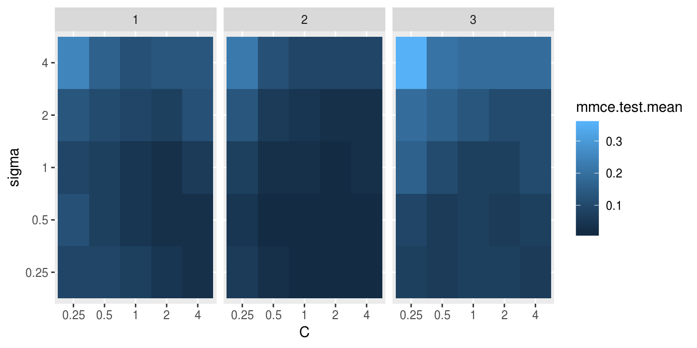

In order to obtain honest performance estimates for a learner all parts of the model building like preprocessing and model selection steps should be included in the resampling, i.e., repeated for every pair of training/test data. For steps that themselves require resampling like parameter tuning or feature selection (via the wrapper approach) this results in two nested resampling loops.

Nested Resampling Figure
The graphic above illustrates nested resampling for parameter tuning with 3-fold cross-validation in the outer and 4-fold cross-validation in the inner loop.
In the outer resampling loop, we have three pairs of training/test sets. On each of these outer training sets parameter tuning is done, thereby executing the inner resampling loop. This way, we get one set of selected hyperparameters for each outer training set. Then the learner is fitted on each outer training set using the corresponding selected hyperparameters and its performance is evaluated on the outer test sets.
In mlr, you can get nested resampling for free without programming any looping by using the wrapper functionality. This works as follows:
- Generate a wrapped Learner (
makeLearner()) via functionmakeTuneWrapper()ormakeFeatSelWrapper(). Specify the inner resampling strategy using theirresamplingargument. - Call function
resample()(see also the section about resampling and pass the outer resampling strategy to itsresamplingargument.
You can freely combine different inner and outer resampling strategies.
The outer strategy can be a resample description ResampleDesc (makeResampleDesc())) or a resample instance (makeResampleInstance())). A common setup is prediction and performance evaluation on a fixed outer test set. This can be achieved by using function makeFixedHoldoutInstance() to generate the outer resample instance(makeResampleInstance()`).
The inner resampling strategy should preferably be a ResampleDesc (makeResampleDesc()), as the sizes of the outer training sets might differ. Per default, the inner resample description is instantiated once for every outer training set. This way during tuning/feature selection all parameter or feature sets are compared on the same inner training/test sets to reduce variance. You can also turn this off using the same.resampling.instance argument of makeTuneControl* (TuneControl()) or makeFeatSelControl* (FeatSelControl()).
Nested resampling is computationally expensive. For this reason in the examples shown below we use relatively small search spaces and a low number of resampling iterations. In practice, you normally have to increase both. As this is computationally intensive you might want to have a look at section parallelization.
Tuning
As you might recall from the tutorial page about tuning, you need to define a search space by function ParamHelpers::makeParamSet(), a search strategy by makeTuneControl*(TuneControl()), and a method to evaluate hyperparameter settings (i.e., the inner resampling strategy and a performance measure).
Below is a classification example. We evaluate the performance of a support vector machine (kernlab::ksvm()) with tuned cost parameter C and RBF kernel parameter sigma. We use 3-fold cross-validation in the outer and subsampling with 2 iterations in the inner loop. For tuing a grid search is used to find the hyperparameters with lowest error rate (mmce is the default measure for classification). The wrapped Learner (makeLearner()) is generated by calling makeTuneWrapper().
Note that in practice the parameter set should be larger. A common recommendation is 2^(-12:12) for both C and sigma.
# Tuning in inner resampling loop
ps = makeParamSet(
makeDiscreteParam("C", values = 2^(-2:2)),
makeDiscreteParam("sigma", values = 2^(-2:2))
)
ctrl = makeTuneControlGrid()
inner = makeResampleDesc("Subsample", iters = 2)
lrn = makeTuneWrapper("classif.ksvm", resampling = inner, par.set = ps, control = ctrl, show.info = FALSE)
# Outer resampling loop
outer = makeResampleDesc("CV", iters = 3)
r = resample(lrn, iris.task, resampling = outer, extract = getTuneResult, show.info = FALSE)
r
## Resample Result
## Task: iris-example
## Learner: classif.ksvm.tuned
## Aggr perf: mmce.test.mean=0.0466667
## Runtime: 3.20863You can obtain the error rates on the 3 outer test sets by:
Accessing the tuning result
We have kept the results of the tuning for further evaluations. For example one might want to find out, if the best obtained configurations vary for the different outer splits. As storing entire models may be expensive (but possible by setting models = TRUE) we used the extract option of resample(). Function getTuneResult() returns, among other things, the optimal hyperparameter values and the optimization path (ParamHelpers::OptPath()) for each iteration of the outer resampling loop. Note that the performance values shown when printing r$extract are the aggregated performances resulting from inner resampling on the outer training set for the best hyperparameter configurations (not to be confused with r$measures.test shown above).
r$extract
## [[1]]
## Tune result:
## Op. pars: C=4; sigma=0.25
## mmce.test.mean=0.0294118
##
## [[2]]
## Tune result:
## Op. pars: C=2; sigma=0.25
## mmce.test.mean=0.0588235
##
## [[3]]
## Tune result:
## Op. pars: C=1; sigma=0.5
## mmce.test.mean=0.0441176
names(r$extract[[1]])
## [1] "learner" "control" "x" "y" "resampling"
## [6] "threshold" "opt.path"We can compare the optimal parameter settings obtained in the 3 resampling iterations. As you can see, the optimal configuration usually depends on the data. You may be able to identify a range of parameter settings that achieve good performance though, e.g., the values for C should be at least 1 and the values for sigma should be between 0 and 1.
With function getNestedTuneResultsOptPathDf() you can extract the optimization paths for the 3 outer cross-validation iterations for further inspection and analysis. These are stacked in one data.frame with column iter indicating the resampling iteration.
opt.paths = getNestedTuneResultsOptPathDf(r)
head(opt.paths, 10)
## C sigma mmce.test.mean dob eol error.message exec.time iter
## 1 0.25 0.25 0.08823529 1 NA <NA> 1.129 1
## 2 0.5 0.25 0.04411765 2 NA <NA> 0.029 1
## 3 1 0.25 0.05882353 3 NA <NA> 0.022 1
## 4 2 0.25 0.05882353 4 NA <NA> 0.023 1
## 5 4 0.25 0.02941176 5 NA <NA> 0.023 1
## 6 0.25 0.5 0.05882353 6 NA <NA> 0.023 1
## 7 0.5 0.5 0.05882353 7 NA <NA> 0.022 1
## 8 1 0.5 0.05882353 8 NA <NA> 0.030 1
## 9 2 0.5 0.04411765 9 NA <NA> 0.025 1
## 10 4 0.5 0.07352941 10 NA <NA> 0.025 1Below we visualize the opt.paths for the 3 outer resampling iterations.
g = ggplot(opt.paths, aes(x = C, y = sigma, fill = mmce.test.mean))
g + geom_tile() + facet_wrap(~ iter)
Another useful function is getNestedTuneResultsX(), which extracts the best found hyperparameter settings for each outer resampling iteration.
You can furthermore access the resampling indices of the inner level using getResamplingIndices() if you used either extract = getTuneResult or extract = getFeatSelResult in the resample() call:
getResamplingIndices(r, inner = TRUE)
## [[1]]
## [[1]]$train.inds
## [[1]]$train.inds[[1]]
## [1] 120 85 106 79 139 146 49 58 38 101 40 55 142 77 103 39 108
## [18] 75 6 119 72 25 61 94 138 144 27 66 14 22 9 50 92 74
## [35] 140 111 136 118 135 100 114 8 65 45 86 56 46 68 2 96 63
## [52] 125 105 70 89 3 88 34 128 122 76 41 130 54 4 117
##
## [[1]]$train.inds[[2]]
## [1] 120 4 139 100 74 91 2 144 92 22 113 128 107 118 79 106 57
## [18] 101 136 114 108 16 117 8 102 52 125 140 9 46 75 149 116 28
## [35] 88 41 56 103 77 49 104 94 129 31 40 5 54 19 89 66 63
## [52] 78 6 25 50 105 55 122 10 34 53 68 135 111 18 12
##
##
## [[1]]$test.inds
## [[1]]$test.inds[[1]]
## [1] 102 71 83 57 52 104 31 149 126 51 93 60 91 5 107 7 129
## [18] 53 18 10 23 19 150 12 113 28 116 109 148 95 73 16 78 17
##
## [[1]]$test.inds[[2]]
## [1] 138 14 71 83 126 51 93 60 70 119 58 45 7 86 72 23 146
## [18] 142 150 85 38 39 65 76 109 3 148 61 95 27 73 96 17 130
##
##
##
## [[2]]
## [[2]]$train.inds
## [[2]]$train.inds[[1]]
## [1] 20 82 52 67 13 2 145 94 5 64 9 11 58 85 69 53 80
## [18] 137 27 97 138 139 56 23 32 35 78 26 116 133 126 75 1 47
## [35] 96 6 114 37 123 122 120 141 119 134 132 46 44 110 29 73 36
## [52] 124 150 95 24 148 39 81 98 25 60 38 90 127 66 88
##
## [[2]]$train.inds[[2]]
## [1] 118 81 1 43 141 26 114 73 127 37 98 121 23 123 6 147 58
## [18] 145 75 104 13 62 56 20 77 115 87 126 47 60 97 143 124 42
## [35] 112 66 80 64 95 96 30 25 36 41 110 33 35 9 148 15 82
## [52] 132 138 84 137 131 116 88 39 2 85 122 12 38 150 99
##
##
## [[2]]$test.inds
## [[2]]$test.inds[[1]]
## [1] 143 84 103 99 87 34 118 59 48 131 12 41 18 21 102 86 62
## [18] 42 50 8 129 147 33 15 43 68 121 14 7 115 104 77 112 30
##
## [[2]]$test.inds[[2]]
## [1] 94 69 44 103 67 90 29 134 34 59 48 27 133 32 18 21 52
## [18] 102 119 86 11 50 8 46 139 78 129 53 68 14 7 5 24 120
##
##
##
## [[3]]
## [[3]]$train.inds
## [[3]]$train.inds[[1]]
## [1] 36 21 107 146 65 137 19 49 124 24 132 143 109 61 105 64 43
## [18] 91 99 4 35 54 63 40 106 1 117 135 115 11 67 101 136 125
## [35] 76 149 140 44 47 128 108 121 51 29 82 93 98 71 83 79 97
## [52] 74 31 30 20 22 142 16 100 3 84 134 80 113 90 48
##
## [[3]]$train.inds[[2]]
## [1] 133 10 4 105 47 123 107 62 106 83 67 112 20 87 136 59 109
## [18] 48 117 99 11 89 76 108 45 92 80 54 28 74 124 43 147 61
## [35] 22 91 17 135 16 127 98 42 79 113 29 19 65 51 131 146 144
## [52] 141 71 36 24 26 100 115 72 49 142 37 143 3 57 145
##
##
## [[3]]$test.inds
## [[3]]$test.inds[[1]]
## [1] 127 26 81 62 145 32 69 33 15 89 42 59 112 133 131 72 147
## [18] 57 28 130 92 13 17 111 37 55 87 144 10 45 141 123 110 70
##
## [[3]]$test.inds[[2]]
## [1] 81 93 32 69 132 84 33 134 15 31 1 90 137 40 121 101 63
## [18] 130 125 97 64 13 21 140 111 55 35 82 149 30 44 110 70 128Feature selection
As you might recall from the section about feature selection, mlr supports the filter and the wrapper approach.
Wrapper methods
Wrapper methods use the performance of a learning algorithm to assess the usefulness of a feature set. In order to select a feature subset a learner is trained repeatedly on different feature subsets and the subset which leads to the best learner performance is chosen.
For feature selection in the inner resampling loop, you need to choose a search strategy (function makeFeatSelControl* (FeatSelControl())), a performance measure and the inner resampling strategy. Then use function makeFeatSelWrapper() to bind everything together.
Below we use sequential forward selection with linear regression on the BostonHousing (mlbench::BostonHousing() data set (bh.task()).
# Feature selection in inner resampling loop
inner = makeResampleDesc("CV", iters = 3)
lrn = makeFeatSelWrapper("regr.lm", resampling = inner,
control = makeFeatSelControlSequential(method = "sfs"), show.info = FALSE)
# Outer resampling loop
outer = makeResampleDesc("Subsample", iters = 2)
r = resample(learner = lrn, task = bh.task, resampling = outer, extract = getFeatSelResult,
show.info = FALSE)
r
## Resample Result
## Task: BostonHousing-example
## Learner: regr.lm.featsel
## Aggr perf: mse.test.mean=25.3756536
## Runtime: 3.9806
r$measures.test
## iter mse
## 1 1 23.72561
## 2 2 27.02569Accessing the selected features
The result of the feature selection can be extracted by function getFeatSelResult(). It is also possible to keep whole models (makeWrappedModel()) by setting models = TRUE when calling resample().
r$extract
## [[1]]
## FeatSel result:
## Features (10): crim, zn, chas, nox, rm, dis, rad, ptratio, b, lstat
## mse.test.mean=23.9849397
##
## [[2]]
## FeatSel result:
## Features (9): zn, indus, chas, nox, rm, dis, ptratio, b, lstat
## mse.test.mean=23.8845128
# Selected features in the first outer resampling iteration
r$extract[[1]]$x
## [1] "crim" "zn" "chas" "nox" "rm" "dis" "rad"
## [8] "ptratio" "b" "lstat"
# Resampled performance of the selected feature subset on the first inner training set
r$extract[[1]]$y
## mse.test.mean
## 23.98494As for tuning, you can extract the optimization paths. The resulting data.frames contain, among others, binary columns for all features, indicating if they were included in the linear regression model, and the corresponding performances.
opt.paths = lapply(r$extract, function(x) as.data.frame(x$opt.path))
head(opt.paths[[1]])
## crim zn indus chas nox rm age dis rad tax ptratio b lstat mse.test.mean
## 1 0 0 0 0 0 0 0 0 0 0 0 0 0 88.80051
## 2 1 0 0 0 0 0 0 0 0 0 0 0 0 77.45287
## 3 0 1 0 0 0 0 0 0 0 0 0 0 0 78.72977
## 4 0 0 1 0 0 0 0 0 0 0 0 0 0 70.88747
## 5 0 0 0 1 0 0 0 0 0 0 0 0 0 88.42860
## 6 0 0 0 0 1 0 0 0 0 0 0 0 0 72.24730
## dob eol error.message exec.time
## 1 1 2 <NA> 0.019
## 2 2 2 <NA> 0.019
## 3 2 2 <NA> 0.017
## 4 2 2 <NA> 0.015
## 5 2 2 <NA> 0.018
## 6 2 2 <NA> 0.016An easy-to-read version of the optimization path for sequential feature selection can be obtained with function analyzeFeatSelResult().
analyzeFeatSelResult(r$extract[[1]])
## Features : 10
## Performance : mse.test.mean=23.9849397
## crim, zn, chas, nox, rm, dis, rad, ptratio, b, lstat
##
## Path to optimum:
## - Features: 0 Init : Perf = 88.801 Diff: NA *
## - Features: 1 Add : lstat Perf = 40.443 Diff: 48.357 *
## - Features: 2 Add : rm Perf = 31.651 Diff: 8.7927 *
## - Features: 3 Add : ptratio Perf = 29.355 Diff: 2.296 *
## - Features: 4 Add : b Perf = 28.292 Diff: 1.0625 *
## - Features: 5 Add : dis Perf = 27.186 Diff: 1.1059 *
## - Features: 6 Add : nox Perf = 25.88 Diff: 1.3059 *
## - Features: 7 Add : chas Perf = 25.169 Diff: 0.71105 *
## - Features: 8 Add : zn Perf = 24.788 Diff: 0.38164 *
## - Features: 9 Add : crim Perf = 24.725 Diff: 0.063102 *
## - Features: 10 Add : rad Perf = 23.985 Diff: 0.73959 *
##
## Stopped, because no improving feature was found.Filter methods with tuning
Filter methods assign an importance value to each feature. Based on these values you can select a feature subset by either keeping all features with importance higher than a certain threshold or by keeping a fixed number or percentage of the highest ranking features. Often, neither the theshold nor the number or percentage of features is known in advance and thus tuning is necessary.
In the example below the threshold value (fw.threshold) is tuned in the inner resampling loop. For this purpose the base Learner (makeLearner()) "regr.lm" is wrapped two times. First, makeFilterWrapper() is used to fuse linear regression with a feature filtering preprocessing step. Then a tuning step is added by makeTuneWrapper().
# Tuning of the percentage of selected filters in the inner loop
lrn = makeFilterWrapper(learner = "regr.lm", fw.method = "chi.squared")
ps = makeParamSet(makeDiscreteParam("fw.threshold", values = seq(0, 1, 0.2)))
ctrl = makeTuneControlGrid()
inner = makeResampleDesc("CV", iters = 3)
lrn = makeTuneWrapper(lrn, resampling = inner, par.set = ps, control = ctrl, show.info = FALSE)
# Outer resampling loop
outer = makeResampleDesc("CV", iters = 3)
r = resample(learner = lrn, task = bh.task, resampling = outer, models = TRUE, show.info = FALSE)
r
## Resample Result
## Task: BostonHousing-example
## Learner: regr.lm.filtered.tuned
## Aggr perf: mse.test.mean=24.0637287
## Runtime: 4.12936Accessing the selected features and optimal percentage
In the above example we kept the complete model (makeWrappedModel())s.
Below are some examples that show how to extract information from the model (makeWrappedModel())s.
r$models
## [[1]]
## Model for learner.id=regr.lm.filtered.tuned; learner.class=TuneWrapper
## Trained on: task.id = BostonHousing-example; obs = 337; features = 13
## Hyperparameters: fw.method=chi.squared
##
## [[2]]
## Model for learner.id=regr.lm.filtered.tuned; learner.class=TuneWrapper
## Trained on: task.id = BostonHousing-example; obs = 338; features = 13
## Hyperparameters: fw.method=chi.squared
##
## [[3]]
## Model for learner.id=regr.lm.filtered.tuned; learner.class=TuneWrapper
## Trained on: task.id = BostonHousing-example; obs = 337; features = 13
## Hyperparameters: fw.method=chi.squaredThe result of the feature selection can be extracted by function getFilteredFeatures(). Almost always all 13 features are selected.
lapply(r$models, function(x) getFilteredFeatures(x$learner.model$next.model))
## [[1]]
## [1] "crim" "zn" "indus" "nox" "rm" "age" "dis"
## [8] "rad" "tax" "ptratio" "b" "lstat"
##
## [[2]]
## [1] "crim" "zn" "indus" "chas" "nox" "rm" "age"
## [8] "dis" "rad" "tax" "ptratio" "b" "lstat"
##
## [[3]]
## [1] "crim" "zn" "indus" "nox" "rm" "age" "dis"
## [8] "rad" "tax" "ptratio" "b" "lstat"Below the tune results (TuneResult()) and optimization paths (ParamHelpers::OptPath()) are accessed.
res = lapply(r$models, getTuneResult)
res
## [[1]]
## Tune result:
## Op. pars: fw.threshold=0.2
## mse.test.mean=24.5915425
##
## [[2]]
## Tune result:
## Op. pars: fw.threshold=0
## mse.test.mean=26.0475497
##
## [[3]]
## Tune result:
## Op. pars: fw.threshold=0.4
## mse.test.mean=27.3686204
opt.paths = lapply(res, function(x) as.data.frame(x$opt.path))
opt.paths[[1]]
## fw.threshold mse.test.mean dob eol error.message exec.time
## 1 0 24.76939 1 NA <NA> 0.371
## 2 0.2 24.59154 2 NA <NA> 0.235
## 3 0.4 24.61947 3 NA <NA> 0.306
## 4 0.6 30.12589 4 NA <NA> 0.134
## 5 0.8 79.40137 5 NA <NA> 0.118
## 6 1 79.40137 6 NA <NA> 0.115Benchmark experiments
In a benchmark experiment multiple learners are compared on one or several tasks (see also the section about benchmarking. Nested resampling in benchmark experiments is achieved the same way as in resampling:
- First, use
makeTuneWrapper()ormakeFeatSelWrapper()to generate wrapped Learner (makeLearner())s with the inner resampling strategies of your choice. - Second, call
benchmark()and specify the outer resampling strategies for all tasks.
The inner resampling strategies should be resample descriptions (makeResampleDesc()). You can use different inner resampling strategies for different wrapped learners. For example it might be practical to do fewer subsampling or bootstrap iterations for slower learners.
If you have larger benchmark experiments you might want to have a look at the section about parallelization.
As mentioned in the section about benchmark experiments you can also use different resampling strategies for different learning tasks by passing a list of resampling descriptions or instances to benchmark().
We will see three examples to show different benchmark settings:
- Two data sets + two classification algorithms + tuning
- One data set + two regression algorithms + feature selection
- One data set + two regression algorithms + feature filtering + tuning
Example 1: Two tasks, two learners, tuning
Below is a benchmark experiment with two data sets, datasets::iris() and mlbench::sonar(), and two Learner (makeLearner())s, kernlab::ksvm() and kknn::kknn(), that are both tuned.
As inner resampling strategies we use holdout for kernlab::ksvm() and subsampling with 3 iterations for kknn::kknn(). As outer resampling strategies we take holdout for the datasets::iris() and bootstrap with 2 iterations for the mlbench::sonar() data (sonar.task()). We consider the accuracy (acc), which is used as tuning criterion, and also calculate the balanced error rate (ber).
# List of learning tasks
tasks = list(iris.task, sonar.task)
# Tune svm in the inner resampling loop
ps = makeParamSet(
makeDiscreteParam("C", 2^(-1:1)),
makeDiscreteParam("sigma", 2^(-1:1)))
ctrl = makeTuneControlGrid()
inner = makeResampleDesc("Holdout")
lrn1 = makeTuneWrapper("classif.ksvm", resampling = inner, par.set = ps, control = ctrl,
show.info = FALSE)
# Tune k-nearest neighbor in inner resampling loop
ps = makeParamSet(makeDiscreteParam("k", 3:5))
ctrl = makeTuneControlGrid()
inner = makeResampleDesc("Subsample", iters = 3)
lrn2 = makeTuneWrapper("classif.kknn", resampling = inner, par.set = ps, control = ctrl,
show.info = FALSE)
## Loading required package: kknn
# Learners
lrns = list(lrn1, lrn2)
# Outer resampling loop
outer = list(makeResampleDesc("Holdout"), makeResampleDesc("Bootstrap", iters = 2))
res = benchmark(lrns, tasks, outer, measures = list(acc, ber), show.info = FALSE)
res
## task.id learner.id acc.test.mean ber.test.mean
## 1 iris-example classif.ksvm.tuned 0.9000000 0.1029762
## 2 iris-example classif.kknn.tuned 0.9000000 0.1101190
## 3 Sonar-example classif.ksvm.tuned 0.5729004 0.5000000
## 4 Sonar-example classif.kknn.tuned 0.8420779 0.1602458The print method for the BenchmarkResult() shows the aggregated performances from the outer resampling loop.
As you might recall, mlr offers several accessor function to extract information from the benchmark result. These are listed on the help page of BenchmarkResult() and many examples are shown on the tutorial page about benchmark experiments.
The performance values in individual outer resampling runs can be obtained by getBMRPerformances(). Note that, since we used different outer resampling strategies for the two tasks, the number of rows per task differ.
getBMRPerformances(res, as.df = TRUE)
## task.id learner.id iter acc ber
## 1 iris-example classif.ksvm.tuned 1 0.9000000 0.1029762
## 2 iris-example classif.kknn.tuned 1 0.9000000 0.1101190
## 3 Sonar-example classif.ksvm.tuned 1 0.6133333 0.5000000
## 4 Sonar-example classif.ksvm.tuned 2 0.5324675 0.5000000
## 5 Sonar-example classif.kknn.tuned 1 0.8400000 0.1622939
## 6 Sonar-example classif.kknn.tuned 2 0.8441558 0.1581978The results from the parameter tuning can be obtained through function getBMRTuneResults().
getBMRTuneResults(res)
## $`iris-example`
## $`iris-example`$classif.ksvm.tuned
## $`iris-example`$classif.ksvm.tuned[[1]]
## Tune result:
## Op. pars: C=0.5; sigma=0.5
## mmce.test.mean=0.0000000
##
##
## $`iris-example`$classif.kknn.tuned
## $`iris-example`$classif.kknn.tuned[[1]]
## Tune result:
## Op. pars: k=5
## mmce.test.mean=0.0686275
##
##
##
## $`Sonar-example`
## $`Sonar-example`$classif.ksvm.tuned
## $`Sonar-example`$classif.ksvm.tuned[[1]]
## Tune result:
## Op. pars: C=0.5; sigma=2
## mmce.test.mean=0.3000000
##
## $`Sonar-example`$classif.ksvm.tuned[[2]]
## Tune result:
## Op. pars: C=1; sigma=0.5
## mmce.test.mean=0.2428571
##
##
## $`Sonar-example`$classif.kknn.tuned
## $`Sonar-example`$classif.kknn.tuned[[1]]
## Tune result:
## Op. pars: k=4
## mmce.test.mean=0.0809524
##
## $`Sonar-example`$classif.kknn.tuned[[2]]
## Tune result:
## Op. pars: k=4
## mmce.test.mean=0.0809524As for several other accessor functions a clearer representation as data.frame can be achieved by setting as.df = TRUE.
getBMRTuneResults(res, as.df = TRUE)
## task.id learner.id iter C sigma mmce.test.mean k
## 1 iris-example classif.ksvm.tuned 1 0.5 0.5 0.00000000 NA
## 2 iris-example classif.kknn.tuned 1 NA NA 0.06862745 5
## 3 Sonar-example classif.ksvm.tuned 1 0.5 2.0 0.30000000 NA
## 4 Sonar-example classif.ksvm.tuned 2 1.0 0.5 0.24285714 NA
## 5 Sonar-example classif.kknn.tuned 1 NA NA 0.08095238 4
## 6 Sonar-example classif.kknn.tuned 2 NA NA 0.08095238 4It is also possible to extract the tuning results for individual tasks and learners and, as shown in earlier examples, inspect the optimization path (ParamHelpers::OptPath()).
tune.res = getBMRTuneResults(res, task.ids = "Sonar-example", learner.ids = "classif.ksvm.tuned",
as.df = TRUE)
tune.res
## task.id learner.id iter C sigma mmce.test.mean
## 1 Sonar-example classif.ksvm.tuned 1 0.5 2.0 0.3000000
## 2 Sonar-example classif.ksvm.tuned 2 1.0 0.5 0.2428571
getNestedTuneResultsOptPathDf(res$results[["Sonar-example"]][["classif.ksvm.tuned"]])Example 2: One task, two learners, feature selection
Let’s see how we can do feature selection in a benchmark experiment:
# Feature selection in inner resampling loop
ctrl = makeFeatSelControlSequential(method = "sfs")
inner = makeResampleDesc("Subsample", iters = 2)
lrn = makeFeatSelWrapper("regr.lm", resampling = inner, control = ctrl, show.info = FALSE)
# Learners
lrns = list("regr.rpart", lrn)
# Outer resampling loop
outer = makeResampleDesc("Subsample", iters = 2)
res = benchmark(tasks = bh.task, learners = lrns, resampling = outer, show.info = FALSE)
res
## task.id learner.id mse.test.mean
## 1 BostonHousing-example regr.rpart 22.35852
## 2 BostonHousing-example regr.lm.featsel 22.25372The selected features can be extracted by function getBMRFeatSelResults(). By default, a nested list, with the first level indicating the task and the second level indicating the learner, is returned. If only a single learner or, as in our case, a single task is considered, setting drop = TRUE simplifies the result to a flat list.
getBMRFeatSelResults(res)
## $`BostonHousing-example`
## $`BostonHousing-example`$regr.rpart
## NULL
##
## $`BostonHousing-example`$regr.lm.featsel
## $`BostonHousing-example`$regr.lm.featsel[[1]]
## FeatSel result:
## Features (11): crim, zn, chas, nox, rm, dis, rad, tax, ptratio, b, lstat
## mse.test.mean=29.6124163
##
## $`BostonHousing-example`$regr.lm.featsel[[2]]
## FeatSel result:
## Features (12): crim, zn, indus, chas, nox, rm, age, dis, rad, tax, ptratio, lstat
## mse.test.mean=26.7690558
getBMRFeatSelResults(res, drop = TRUE)
## $regr.rpart
## NULL
##
## $regr.lm.featsel
## $regr.lm.featsel[[1]]
## FeatSel result:
## Features (11): crim, zn, chas, nox, rm, dis, rad, tax, ptratio, b, lstat
## mse.test.mean=29.6124163
##
## $regr.lm.featsel[[2]]
## FeatSel result:
## Features (12): crim, zn, indus, chas, nox, rm, age, dis, rad, tax, ptratio, lstat
## mse.test.mean=26.7690558You can access results for individual learners and tasks and inspect them further.
feats = getBMRFeatSelResults(res, learner.id = "regr.lm.featsel", drop = TRUE)
# Selected features in the first outer resampling iteration
feats[[1]]$x
## [1] "crim" "zn" "chas" "nox" "rm" "dis" "rad"
## [8] "tax" "ptratio" "b" "lstat"
# Resampled performance of the selected feature subset on the first inner training set
feats[[1]]$y
## mse.test.mean
## 29.61242As for tuning, you can extract the optimization paths. The resulting data.frames contain, among others, binary columns for all features, indicating if they were included in the linear regression model, and the corresponding performances. analyzeFeatSelResult() gives a clearer overview.
opt.paths = lapply(feats, function(x) as.data.frame(x$opt.path))
head(opt.paths[[1]])
## crim zn indus chas nox rm age dis rad tax ptratio b lstat mse.test.mean
## 1 0 0 0 0 0 0 0 0 0 0 0 0 0 100.18478
## 2 1 0 0 0 0 0 0 0 0 0 0 0 0 88.19765
## 3 0 1 0 0 0 0 0 0 0 0 0 0 0 87.62284
## 4 0 0 1 0 0 0 0 0 0 0 0 0 0 83.01606
## 5 0 0 0 1 0 0 0 0 0 0 0 0 0 96.78148
## 6 0 0 0 0 1 0 0 0 0 0 0 0 0 89.74406
## dob eol error.message exec.time
## 1 1 2 <NA> 0.008
## 2 2 2 <NA> 0.011
## 3 2 2 <NA> 0.011
## 4 2 2 <NA> 0.012
## 5 2 2 <NA> 0.013
## 6 2 2 <NA> 0.011
analyzeFeatSelResult(feats[[1]])
## Features : 11
## Performance : mse.test.mean=29.6124163
## crim, zn, chas, nox, rm, dis, rad, tax, ptratio, b, lstat
##
## Path to optimum:
## - Features: 0 Init : Perf = 100.18 Diff: NA *
## - Features: 1 Add : rm Perf = 46.816 Diff: 53.369 *
## - Features: 2 Add : lstat Perf = 36.54 Diff: 10.275 *
## - Features: 3 Add : dis Perf = 35.386 Diff: 1.154 *
## - Features: 4 Add : zn Perf = 33.346 Diff: 2.0403 *
## - Features: 5 Add : b Perf = 31.671 Diff: 1.6749 *
## - Features: 6 Add : chas Perf = 31.128 Diff: 0.54317 *
## - Features: 7 Add : nox Perf = 30.733 Diff: 0.395 *
## - Features: 8 Add : ptratio Perf = 30.591 Diff: 0.14223 *
## - Features: 9 Add : rad Perf = 30.018 Diff: 0.57298 *
## - Features: 10 Add : tax Perf = 29.689 Diff: 0.32905 *
## - Features: 11 Add : crim Perf = 29.612 Diff: 0.076352 *
##
## Stopped, because no improving feature was found.Example 3: One task, two learners, feature filtering with tuning
Here is a minimal example for feature filtering with tuning of the feature subset size.
# Feature filtering with tuning in the inner resampling loop
lrn = makeFilterWrapper(learner = "regr.lm", fw.method = "chi.squared")
ps = makeParamSet(makeDiscreteParam("fw.abs", values = seq_len(getTaskNFeats(bh.task))))
ctrl = makeTuneControlGrid()
inner = makeResampleDesc("CV", iter = 2)
lrn = makeTuneWrapper(lrn, resampling = inner, par.set = ps, control = ctrl,
show.info = FALSE)
# Learners
lrns = list("regr.rpart", lrn)
# Outer resampling loop
outer = makeResampleDesc("Subsample", iter = 3)
res = benchmark(tasks = bh.task, learners = lrns, resampling = outer, show.info = FALSE)
res
## task.id learner.id mse.test.mean
## 1 BostonHousing-example regr.rpart 25.74268
## 2 BostonHousing-example regr.lm.filtered.tuned 25.36638# Performances on individual outer test data sets
getBMRPerformances(res, as.df = TRUE)
## task.id learner.id iter mse
## 1 BostonHousing-example regr.rpart 1 20.56212
## 2 BostonHousing-example regr.rpart 2 23.60190
## 3 BostonHousing-example regr.rpart 3 33.06402
## 4 BostonHousing-example regr.lm.filtered.tuned 1 22.35694
## 5 BostonHousing-example regr.lm.filtered.tuned 2 23.87095
## 6 BostonHousing-example regr.lm.filtered.tuned 3 29.87125